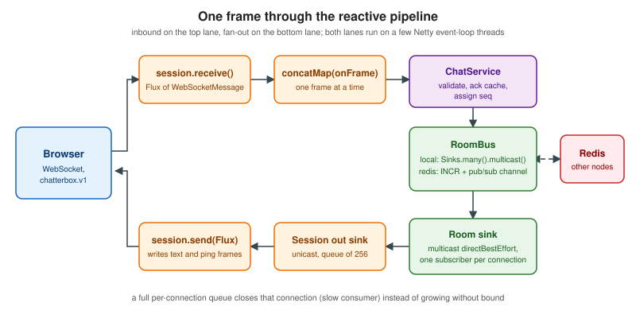

Spring WebFlux WebSockets
|
This content was generated with the assistance of AI and should be verified against the official documentation before being relied on in production. |
This page builds the Chatterbox chat server (the wire protocol is defined on Message Design and Serialization) on the reactive stack of Spring. It was written against Spring Boot 4.1.2 (the latest generally available release on 2026-10-24; 4.2.0 is still a release candidate), which brings Spring Framework 7.0.10 (7.1.0-RC1 is the preview), Spring Security 7.1.2, Spring Data Redis 4.1.2, Reactor Core 3.8.8, Reactor Netty 1.3.8, Netty 4.2.19, Jackson 3.1.7 and RSocket Java 1.1.5, on JDK 21 (Spring Framework 7 needs JDK 17 or later and recommends the newest LTS) with Redis 8.8.3. The versions were checked on 2026-10-24. Spring Framework 7 uses Jakarta EE 11 and WebSocket 2.2 as its Servlet-stack baseline and has removed Undertow support, so on the reactive stack the embedded servers are Reactor Netty (the default), Tomcat and Jetty.
Every example below was compiled and run: the Maven build, the three integration tests, a Node.js conformance client that exercises every frame type of the protocol, and a Docker Compose stack with two server instances behind a shared Redis. The code is original, uses the Chatterbox scenario, and contains only placeholder secrets (change-me).
What WebFlux gives you, and what it does not
Spring has two web stacks. Spring MVC runs on the Servlet API with one thread per request; Spring WebFlux runs on a non-blocking runtime (Reactor Netty by default) where a handful of event-loop threads serve thousands of connections, and handlers return Mono and Flux instead of values. WebSockets suit WebFlux well: a connection is a long-lived pair of streams, and idle connections cost memory but no thread.
The important fact for choosing between the stacks is that the messaging layer on top of WebSocket exists only on the Servlet stack. STOMP, @MessageMapping over STOMP, SimpMessagingTemplate, user destinations, the broker relay and the SockJS fallback are all part of Spring MVC (spring-websocket and spring-messaging with @EnableWebSocketMessageBroker). WebFlux offers a raw WebSocketHandler, in which you define the message format and the routing yourself, and RSocket, a different messaging protocol that can itself run over WebSocket.
| Aspect | Spring MVC (Servlet stack) | Spring WebFlux (reactive stack) |
|---|---|---|
Raw handler |
|
|
Messaging on top |
STOMP with |
None built in: define your own protocol (Chatterbox here) or use RSocket |
Fallback transports |
SockJS ( |
None; use Server-Sent Events or long polling by hand |
Message-level security |
Possible with Spring Security messaging ( |
Handshake only; authorize each frame in your own code |
Threading model |
Servlet container threads; message handling on executor channels |
Event loop; never block in a handler |
Backpressure |
Send buffer limits with |
Reactive Streams demand plus your sink strategy |
Embedded servers |
Tomcat, Jetty (Undertow support removed in Spring 7) |
Reactor Netty, Tomcat, Jetty |
The Servlet side, with a TextWebSocketHandler, an origin allow-list and htmx on top, is covered on Server-Sent Events & WebSockets in the Thymeleaf section, and Reactor itself (operators, Mono, Flux, schedulers) on Reactive Programming and, for rendering, Reactive Rendering with WebFlux. Use STOMP on MVC when you want destinations, a broker and SockJS out of the box and your clients can speak STOMP; use WebFlux with a raw handler when you control both ends (as with the Chatterbox browser client), want the lowest memory per connection or already run a reactive stack.
The handler model
A WebSocketHandler has one method, Mono<Void> handle(WebSocketSession session). The returned Mono represents the whole life of the connection: when it completes, Spring closes the session. The session exposes two streams:
-
Flux<WebSocketMessage> receive()is the inbound stream. It emits every frame the client sends and completes when the connection closes. -
Mono<Void> send(Publisher<WebSocketMessage>)writes a stream of outbound messages and completes when that stream completes and the writes finish.
The handler must compose the two into one flow. There are three useful shapes, depending on when the connection should end:
-
Inbound only.
session.receive().concatMap(...).then()handles frames and writes nothing; it completes when the client disconnects. -
Echo-style. Build the outbound
Fluxfrom the inbound one and returnsession.send(output); nothing is sent until a frame arrives. -
Independent streams joined for completion. Run inbound and outbound separately and combine them with
input.and(output),Mono.ziporMono.firstWithSignal.andandzipwait for both sides;firstWithSignalends the handler as soon as either side terminates, which is what a chat connection needs: when the client goes away the inbound side completes, and when the server decides to close, the outbound side completes.
When both streams are composed there is no "is the connection open" check: the inbound stream receives a completion or error signal, and the outbound stream receives a cancellation. Clean-up belongs in doFinally, which runs for completion, error and cancellation alike. The Chatterbox handler below uses exactly that.
Two practical rules follow from the model. Never block inside a handler (no Thread.sleep, no blocking JDBC, no block()); offload blocking work with Schedulers.boundedElastic() or, better, use reactive drivers. And treat frames as a stream: use concatMap when frames from one connection must be processed in order (as Chatterbox needs for seq and acknowledgements), and flatMap only when order does not matter.
DataBuffer lifecycle
WebSocketMessage.getPayload() returns a DataBuffer. On Netty, buffers are pooled and reference counted, and Spring releases an inbound buffer when the element has passed through the receive() chain. Two consequences:
-
Read the payload synchronously, before returning an asynchronous
Monofrom the operator. The handler below callsgetPayloadAsText(...)insideconcatMapbefore it builds theMono, so the text is copied to aStringwhile the buffer is still valid. -
If you must keep the buffer for later (a nested asynchronous operation that reads it), call
message.retain()(orDataBufferUtils.retain(buffer)) and release it withDataBufferUtils.release(buffer)when you are done. A forgotten release is a slow memory leak that Netty’s leak detector reports.
Outbound, create messages with the session factory methods (session.textMessage(String), session.binaryMessage(...), session.pingMessage(...)) and let send write and release them. Do not create messages ahead of time and queue them: a buffer allocated for a message that is never sent is never released. The handler below therefore queues plain strings and converts them to WebSocketMessage only inside the send pipeline.
Mapping, adapter and handshake
A WebSocketHandler is a normal WebFlux handler, so it is mapped by a HandlerMapping and invoked through a HandlerAdapter:
-
SimpleUrlHandlerMappingmaps URL paths to handlers. Give it an order lower than the annotated controllers (the reference uses-1) so that the WebSocket path is matched first. -
WebSocketHandlerAdapteradapts aWebSocketHandlerto the handler infrastructure. With the WebFlux configuration (which Spring Boot enables) the adapter is declared for you; without it, declare the bean. -
The adapter delegates to a
WebSocketService, by defaultHandshakeWebSocketService. It checks that the request is a valid WebSocket upgrade (aGETwithUpgrade: websocket, a key and a supported version), negotiates the subprotocol, and calls the server-specificRequestUpgradeStrategy. Built-in strategies exist for Reactor Netty (ReactorNettyRequestUpgradeStrategy), Tomcat and Jetty; the Tomcat and Jetty strategies expose engine options such as the idle timeout, and the Netty strategy takes aWebsocketServerSpecfor the maximum frame size, compression and ping handling. -
HandshakeWebSocketServicehas asessionAttributePredicate: attributes of theWebSessionwhose names match are copied into the attributes of theWebSocketSession. The session also has aHandshakeInfowith the request URI, headers, thePrincipal(if the exchange was authenticated), the negotiated subprotocol andgetAttributes(). This is how data gathered during the HTTP handshake (a user, a tenant, a locale) reaches the handler. Chatterbox does not use it for identity because browsers cannot set headers on a WebSocket and the protocol authenticates with a one-time ticket in the first frame instead. -
The subprotocol is negotiated from
WebSocketHandler.getSubProtocols(). The handler below returnschatterbox.v1, and the server answers withSec-WebSocket-Protocol: chatterbox.v1.
The configuration class maps the handler and customises the Netty strategy so that the server enforces the protocol’s 16384-byte limit for client frames (Netty then closes the connection with code 1009, "message too big").
The project
The Maven project uses the Spring Boot parent, so the versions of Spring, Reactor, Netty, Jackson and Lettuce come from the Boot dependency management and only the Boot version is written down.
<?xml version="1.0" encoding="UTF-8"?>
<project xmlns="http://maven.apache.org/POM/4.0.0"
xmlns:xsi="http://www.w3.org/2001/XMLSchema-instance"
xsi:schemaLocation="http://maven.apache.org/POM/4.0.0 https://maven.apache.org/xsd/maven-4.0.0.xsd">
<modelVersion>4.0.0</modelVersion>
<parent>
<groupId>org.springframework.boot</groupId>
<artifactId>spring-boot-starter-parent</artifactId>
<version>4.1.2</version>
<relativePath/>
</parent>
<groupId>com.example</groupId>
<artifactId>chatterbox-webflux</artifactId>
<version>1.0.0</version>
<properties>
<java.version>21</java.version>
</properties>
<dependencies>
<dependency>
<groupId>org.springframework.boot</groupId>
<artifactId>spring-boot-starter-webflux</artifactId>
</dependency>
<dependency>
<groupId>org.springframework.boot</groupId>
<artifactId>spring-boot-starter-security</artifactId>
</dependency>
<dependency>
<groupId>org.springframework.boot</groupId>
<artifactId>spring-boot-starter-data-redis-reactive</artifactId>
</dependency>
<dependency>
<groupId>org.springframework.boot</groupId>
<artifactId>spring-boot-starter-rsocket</artifactId>
</dependency>
<dependency>
<groupId>org.springframework.security</groupId>
<artifactId>spring-security-rsocket</artifactId>
</dependency>
<dependency>
<groupId>org.springframework.security</groupId>
<artifactId>spring-security-messaging</artifactId>
</dependency>
<dependency>
<groupId>org.springframework.boot</groupId>
<artifactId>spring-boot-starter-webflux-test</artifactId>
<scope>test</scope>
</dependency>
<dependency>
<groupId>io.projectreactor</groupId>
<artifactId>reactor-test</artifactId>
<scope>test</scope>
</dependency>
</dependencies>
<build>
<plugins>
<plugin>
<groupId>org.springframework.boot</groupId>
<artifactId>spring-boot-maven-plugin</artifactId>
</plugin>
</plugins>
</build>
</project>server.port=${PORT:8080}
chatterbox.allowed-origins=https://chat.example.test,http://localhost:8080
chatterbox.heartbeat-ms=20000
chatterbox.presence-grace-ms=15000
# local (in-process fan-out) or redis (pub/sub fan-out and shared per-room sequence numbers)
chatterbox.bus=localchatterbox.bus=redis
spring.data.redis.host=${REDIS_HOST:localhost}
spring.data.redis.port=${REDIS_PORT:6379}spring.rsocket.server.transport=websocket
spring.rsocket.server.mapping-path=/rsocketSpring Boot 4 uses Jackson 3, whose packages start with tools.jackson (the annotations remain in com.fasterxml.jackson.annotation) and whose JsonMapper is auto-configured as a bean. The code reads and writes the envelopes as JsonNode trees, so the protocol’s "ignore unknown fields" rule needs no extra work.

Protocol constants and ids
package com.example.chatterbox;
import java.security.SecureRandom;
import java.util.Set;
import java.util.regex.Pattern;
/** Constants and small helpers of the Chatterbox v1 wire protocol. */
final class Protocol {
static final int VERSION = 1;
static final String SUBPROTOCOL = "chatterbox.v1";
static final int MAX_FRAME_BYTES = 16_384;
static final Pattern ROOM = Pattern.compile("[a-z0-9-]{1,64}");
static final Pattern ID = Pattern.compile("[0-9A-Za-z_-]{26,36}");
static final Set<String> TYPES = Set.of("hello", "join", "leave", "message", "edit", "react",
"typing", "receipt", "presence", "history", "ack", "error");
/** Error codes of the protocol, with their retryable flag. */
enum Code {
BAD_REQUEST("bad_request", false), UNSUPPORTED_VERSION("unsupported_version", false),
UNAUTHORIZED("unauthorized", false), FORBIDDEN("forbidden", false), NOT_FOUND("not_found", false),
CONFLICT("conflict", false), TOO_LARGE("too_large", false), RATE_LIMITED("rate_limited", true),
INTERNAL("internal", true), UNAVAILABLE("unavailable", true);
final String wire;
final boolean retryable;
Code(String wire, boolean retryable) {
this.wire = wire;
this.retryable = retryable;
}
}
/** Thrown by validation code; the dispatcher turns it into an error envelope. */
static final class Failure extends RuntimeException {
final Code code;
final int closeCode; // 0 = keep the connection open
Failure(Code code, String message) {
this(code, message, 0);
}
Failure(Code code, String message, int closeCode) {
super(message, null, false, false);
this.code = code;
this.closeCode = closeCode;
}
}
private static final String CROCKFORD = "0123456789ABCDEFGHJKMNPQRSTVWXYZ";
private static final SecureRandom RANDOM = new SecureRandom();
/** Server-originated id: the prefix s_ followed by a 26-character ULID. */
static String serverId() {
char[] out = new char[26];
long time = System.currentTimeMillis();
for (int i = 9; i >= 0; i--) {
out[i] = CROCKFORD.charAt((int) (time & 31));
time >>>= 5;
}
for (int i = 10; i < 26; i++) {
out[i] = CROCKFORD.charAt(RANDOM.nextInt(32));
}
return "s_" + new String(out);
}
private Protocol() {
}
}The room bus and per-room broadcasting
Chatterbox fans every message out to all members of a room. The design separates what is broadcast from how it reaches the other nodes with a small seam, RoomBus, that does two things: it hands out the next sequence number of a room and it publishes a routed frame. Every node builds its local view (history, room sinks) only from what comes back out of bus.inbound(), so one node’s own messages travel the same path as other nodes' messages.
package com.example.chatterbox;
import reactor.core.publisher.Flux;
import reactor.core.publisher.Mono;
import tools.jackson.databind.node.ObjectNode;
/**
* Fan-out and sequencing seam. Every server instance publishes through the bus and builds its local
* view (history, room sinks) only from what comes back out of {@link #inbound()}.
*/
interface RoomBus {
/** A frame for a room. {@code except} is the user who must not receive it (null means everybody). */
record Routed(String room, String except, ObjectNode frame) {
}
/** Next value of the strictly increasing counter of a room. */
Mono<Long> nextSeq(String room);
Mono<Void> publish(Routed routed);
Flux<Routed> inbound();
}The single-process implementation is a counter per room and one multicast sink:
package com.example.chatterbox;
import java.time.Duration;
import java.util.concurrent.ConcurrentHashMap;
import java.util.concurrent.atomic.AtomicLong;
import org.springframework.boot.autoconfigure.condition.ConditionalOnProperty;
import org.springframework.stereotype.Component;
import reactor.core.publisher.Flux;
import reactor.core.publisher.Mono;
import reactor.core.publisher.Sinks;
/** Single-process bus: a counter per room and one multicast sink. */
@Component
@ConditionalOnProperty(name = "chatterbox.bus", havingValue = "local", matchIfMissing = true)
class LocalRoomBus implements RoomBus {
private final ConcurrentHashMap<String, AtomicLong> counters = new ConcurrentHashMap<>();
private final Sinks.Many<Routed> sink = Sinks.many().multicast().directBestEffort();
@Override
public Mono<Long> nextSeq(String room) {
return Mono.fromSupplier(() -> counters.computeIfAbsent(room, r -> new AtomicLong()).incrementAndGet());
}
@Override
public Mono<Void> publish(Routed routed) {
return Mono.fromRunnable(() -> sink.emitNext(routed, Sinks.EmitFailureHandler.busyLooping(Duration.ofMillis(200))));
}
@Override
public Flux<Routed> inbound() {
return sink.asFlux();
}
}Source: Reactor reference: Sinks
Sinks and backpressure
A Sinks.Many is a hot, programmatic Flux: code calls emitNext or tryEmitNext and subscribers receive the values. Which factory you pick decides what happens when a subscriber is slower than the producer. The choice is the heart of a WebSocket server, because slow browsers and mobile networks are normal.
| Factory | Behaviour with a slow subscriber | Use it for |
|---|---|---|
|
Delivers to every subscriber that has demand and drops the value for the ones that do not; one slow subscriber never blocks the others |
Room fan-out when each subscriber has its own bounded buffer downstream (this page) |
|
If any subscriber has no demand the value is dropped for all of them |
Rarely; when partial delivery is worse than none |
|
Buffers up to |
Warm-up buffering before the first subscriber |
|
A single subscriber with a queue; when the queue is full |
One connection’s outbound queue (this page, 256 entries) |
|
Replays the last |
A small "last values" cache, not history |
The Chatterbox pipeline uses two sinks in sequence. A room has a multicast, direct best effort sink; every connection of a member subscribes to it and forwards each routed frame into its own unicast, bounded sink (256 entries), which feeds session.send. When a connection’s queue is full, tryEmitNext returns FAIL_OVERFLOW: the handler closes that connection with 1008 ("policy violation", reason "slow consumer") instead of growing a queue without limit or stalling the room. The client reconnects and catches up with join and since. The alternative, buffering without bound, ends in an out-of-memory error under a stalled mobile client.
Two rules for emitting into sinks from many threads:
-
A sink must be fed serially. Concurrent
tryEmitNextcalls can returnFAIL_NON_SERIALIZED; retry in a loop (the session does) or useemitNextwithSinks.EmitFailureHandler.busyLooping(Duration), as the room bus does. -
Check the result.
tryEmitNextreportsFAIL_TERMINATED,FAIL_CANCELLEDandFAIL_ZERO_SUBSCRIBERas values; ignoring them hides lost messages.
The service: rooms, history and idempotency
ChatService holds the state of rooms, membership, history, presence and the operations behind every acknowledged request. It is deliberately plain Java; the reactive parts are the Mono return values and the bus.
package com.example.chatterbox;
import com.example.chatterbox.Protocol.Code;
import com.example.chatterbox.Protocol.Failure;
import com.example.chatterbox.RoomBus.Routed;
import java.time.Duration;
import java.util.ArrayList;
import java.util.List;
import java.util.Map;
import java.util.Set;
import java.util.concurrent.ConcurrentHashMap;
import java.util.concurrent.ConcurrentSkipListMap;
import java.util.concurrent.atomic.AtomicInteger;
import java.util.concurrent.atomic.AtomicLong;
import jakarta.annotation.PostConstruct;
import org.slf4j.Logger;
import org.slf4j.LoggerFactory;
import org.springframework.beans.factory.annotation.Value;
import org.springframework.stereotype.Service;
import reactor.core.Disposable;
import reactor.core.publisher.Flux;
import reactor.core.publisher.Mono;
import reactor.core.publisher.Sinks;
import tools.jackson.databind.JsonNode;
import tools.jackson.databind.json.JsonMapper;
import tools.jackson.databind.node.ArrayNode;
import tools.jackson.databind.node.ObjectNode;
/** Rooms, membership, history, presence and the operations behind every acknowledged request. */
@Service
class ChatService {
private static final Logger log = LoggerFactory.getLogger(ChatService.class);
record User(String id, String name) {
}
/** Result of an acknowledged request; {@code after} are frames to send to the requester after the ack. */
record Ack(Long seq, boolean dup, ObjectNode result, List<ObjectNode> after) {
Ack duplicate() {
return new Ack(seq, true, result, List.of());
}
}
static final class Stored {
final String id;
final long seq;
final long ts;
final String userId;
final String name;
final String replyTo;
final JsonNode attachments;
volatile String text;
volatile boolean edited;
final Set<String> reactions = ConcurrentHashMap.newKeySet();
Stored(String id, long seq, long ts, String userId, String name, String text, String replyTo, JsonNode attachments) {
this.id = id;
this.seq = seq;
this.ts = ts;
this.userId = userId;
this.name = name;
this.text = text;
this.replyTo = replyTo;
this.attachments = attachments;
}
}
static final class Room {
final String name;
final Map<String, String> members = new ConcurrentHashMap<>(); // userId -> display name
final ConcurrentSkipListMap<Long, Stored> messages = new ConcurrentSkipListMap<>();
final ConcurrentHashMap<String, Stored> byId = new ConcurrentHashMap<>();
final ConcurrentSkipListMap<Long, ObjectNode> log = new ConcurrentSkipListMap<>(); // message, edit, react
final AtomicLong lastSeq = new AtomicLong();
// One multicast sink per room: every connection of a member subscribes to it.
final Sinks.Many<Routed> sink = Sinks.many().multicast().directBestEffort();
Room(String name) {
this.name = name;
}
}
private final RoomBus bus;
private final JsonMapper mapper;
private final long graceMs;
private final ConcurrentHashMap<String, Room> rooms = new ConcurrentHashMap<>();
private final ConcurrentHashMap<String, String> status = new ConcurrentHashMap<>();
private final ConcurrentHashMap<String, AtomicInteger> connections = new ConcurrentHashMap<>();
private final ConcurrentHashMap<String, Disposable> graceTimers = new ConcurrentHashMap<>();
ChatService(RoomBus bus, JsonMapper mapper, @Value("${chatterbox.presence-grace-ms}") long graceMs) {
this.bus = bus;
this.mapper = mapper;
this.graceMs = graceMs;
}
/** Everything a room shows to its members, local or remote, enters through the bus. */
@PostConstruct
void start() {
bus.inbound()
.doOnNext(this::ingest)
.doOnError(e -> log.error("bus failed", e))
.retry()
.subscribe();
}
Room room(String name) {
return rooms.computeIfAbsent(name, Room::new);
}
Room existing(String name) {
return rooms.get(name);
}
List<String> roomsOf(String userId) {
List<String> out = new ArrayList<>();
rooms.forEach((n, r) -> {
if (r.members.containsKey(userId)) {
out.add(n);
}
});
return out;
}
// ---------------------------------------------------------------- bus ingestion
private void ingest(Routed routed) {
Room room = room(routed.room());
ObjectNode frame = routed.frame();
String type = frame.path("type").asString();
JsonNode p = frame.path("payload");
long seq = p.path("seq").asLong(0);
if (seq > 0) {
room.lastSeq.accumulateAndGet(seq, Math::max);
room.log.put(seq, frame);
}
switch (type) {
case "message" -> {
JsonNode from = p.path("from");
Stored s = new Stored(frame.path("id").asString(), seq, frame.path("ts").asLong(),
from.path("userId").asString(), from.path("name").asString(), p.path("text").asString(),
p.path("replyTo").isNull() ? null : p.path("replyTo").asString(), p.path("attachments"));
room.messages.put(seq, s);
room.byId.put(s.id, s);
}
case "edit" -> {
Stored s = room.byId.get(p.path("target").asString());
if (s != null) {
s.text = p.path("text").asString();
s.edited = true;
}
}
case "react" -> {
Stored s = room.byId.get(p.path("target").asString());
if (s != null) {
String key = p.path("from").path("userId").asString() + "|" + p.path("emoji").asString();
if ("add".equals(p.path("op").asString())) {
s.reactions.add(key);
} else {
s.reactions.remove(key);
}
}
}
default -> {
}
}
room.sink.emitNext(routed, Sinks.EmitFailureHandler.busyLooping(Duration.ofMillis(200)));
}
// ---------------------------------------------------------------- envelope builders
ObjectNode envelope(String type, String id, String room, ObjectNode payload) {
ObjectNode n = mapper.createObjectNode();
n.put("v", Protocol.VERSION);
n.put("type", type);
n.put("id", id);
if (room == null) {
n.putNull("room");
} else {
n.put("room", room);
}
n.put("ts", System.currentTimeMillis());
n.set("payload", payload);
return n;
}
private ObjectNode presenceFrame(String room, User u, String st) {
ObjectNode p = mapper.createObjectNode();
p.put("userId", u.id());
p.put("name", u.name());
p.put("status", st);
return envelope("presence", Protocol.serverId(), room, p);
}
private Room memberRoom(User u, String roomName) {
Room r = existing(roomName);
if (r == null || !r.members.containsKey(u.id())) {
throw new Failure(Code.FORBIDDEN, "not a member of " + roomName);
}
return r;
}
// ---------------------------------------------------------------- operations
Mono<Ack> join(User u, String roomName, JsonNode payload) {
if (roomName.startsWith("dm-") && !dmAllowed(roomName, u.id())) {
throw new Failure(Code.FORBIDDEN, "direct-message rooms are private");
}
Room room = room(roomName);
boolean added = room.members.put(u.id(), u.name()) == null;
ObjectNode result = mapper.createObjectNode();
ArrayNode members = result.putArray("members");
room.members.forEach((id, name) -> {
ObjectNode m = members.addObject();
m.put("userId", id);
m.put("name", name);
m.put("status", status.getOrDefault(id, "offline"));
});
result.put("lastSeq", room.lastSeq.get());
List<ObjectNode> replay = new ArrayList<>();
JsonNode since = payload.path("since");
if (since.isIntegralNumber()) {
replay.addAll(room.log.tailMap(since.asLong(), false).values());
}
Mono<Void> announce = added
? bus.publish(new Routed(roomName, u.id(), presenceFrame(roomName, u, status.getOrDefault(u.id(), "online"))))
: Mono.empty();
return announce.thenReturn(new Ack(null, false, result, replay));
}
Mono<Ack> leave(User u, String roomName) {
Room room = existing(roomName);
if (room == null || room.members.remove(u.id()) == null) {
throw new Failure(Code.NOT_FOUND, "not a member of " + roomName);
}
return Mono.just(new Ack(null, false, mapper.createObjectNode(), List.of()));
}
Mono<Ack> message(User u, String roomName, String id, JsonNode p) {
Room room = memberRoom(u, roomName);
String text = text(p);
JsonNode replyTo = p.path("replyTo");
if (replyTo.isString() && !room.byId.containsKey(replyTo.asString())) {
throw new Failure(Code.NOT_FOUND, "replyTo is not a message of this room");
}
JsonNode attachments = p.path("attachments");
if (attachments.isArray()) {
if (attachments.size() > 5) {
throw new Failure(Code.BAD_REQUEST, "at most 5 attachments");
}
for (JsonNode a : attachments) {
if (!a.path("url").asString("").startsWith("https://")) {
throw new Failure(Code.BAD_REQUEST, "attachment urls must be https");
}
}
}
if (room.byId.containsKey(id)) {
throw new Failure(Code.CONFLICT, "message id already used");
}
return bus.nextSeq(roomName).flatMap(seq -> {
ObjectNode payload = mapper.createObjectNode();
ObjectNode from = payload.putObject("from");
from.put("userId", u.id());
from.put("name", u.name());
payload.put("text", text);
if (replyTo.isString()) {
payload.put("replyTo", replyTo.asString());
} else {
payload.putNull("replyTo");
}
payload.set("attachments", attachments.isArray() ? attachments : mapper.createArrayNode());
payload.put("seq", seq);
payload.put("edited", false);
ObjectNode frame = envelope("message", id, roomName, payload);
return bus.publish(new Routed(roomName, null, frame))
.thenReturn(new Ack(seq, false, mapper.createObjectNode(), List.of()));
});
}
Mono<Ack> edit(User u, String roomName, JsonNode p) {
Room room = memberRoom(u, roomName);
Stored target = room.byId.get(p.path("target").asString());
if (target == null) {
throw new Failure(Code.NOT_FOUND, "unknown target");
}
if (!target.userId.equals(u.id())) {
throw new Failure(Code.FORBIDDEN, "only the author can edit");
}
String text = text(p);
return bus.nextSeq(roomName).flatMap(seq -> {
ObjectNode payload = mapper.createObjectNode();
payload.put("target", target.id);
payload.put("text", text);
payload.put("seq", seq);
payload.put("editedAt", System.currentTimeMillis());
return bus.publish(new Routed(roomName, null, envelope("edit", Protocol.serverId(), roomName, payload)))
.thenReturn(new Ack(seq, false, mapper.createObjectNode(), List.of()));
});
}
Mono<Ack> react(User u, String roomName, JsonNode p) {
Room room = memberRoom(u, roomName);
Stored target = room.byId.get(p.path("target").asString());
if (target == null) {
throw new Failure(Code.NOT_FOUND, "unknown target");
}
String emoji = p.path("emoji").asString("");
String op = p.path("op").asString("");
if (emoji.isEmpty() || emoji.length() > 16 || !(op.equals("add") || op.equals("remove"))) {
throw new Failure(Code.BAD_REQUEST, "emoji and op are required");
}
boolean present = target.reactions.contains(u.id() + "|" + emoji);
if (op.equals("add") && present) {
throw new Failure(Code.CONFLICT, "already reacted");
}
if (op.equals("remove") && !present) {
throw new Failure(Code.NOT_FOUND, "no such reaction");
}
return bus.nextSeq(roomName).flatMap(seq -> {
ObjectNode payload = mapper.createObjectNode();
payload.put("target", target.id);
payload.put("emoji", emoji);
payload.put("op", op);
payload.putObject("from").put("userId", u.id());
payload.put("seq", seq);
return bus.publish(new Routed(roomName, null, envelope("react", Protocol.serverId(), roomName, payload)))
.thenReturn(new Ack(seq, false, mapper.createObjectNode(), List.of()));
});
}
/** Fire-and-forget: typing and receipt go to the other members. */
Mono<Void> relay(User u, String type, String roomName, JsonNode p) {
Room room = memberRoom(u, roomName);
ObjectNode payload = mapper.createObjectNode();
payload.put("userId", u.id());
if (type.equals("typing")) {
String state = p.path("state").asString("");
if (!(state.equals("start") || state.equals("stop"))) {
throw new Failure(Code.BAD_REQUEST, "state must be start or stop");
}
payload.put("state", state);
} else {
String kind = p.path("kind").asString("");
long upTo = p.path("upTo").asLong(-1);
if (!(kind.equals("delivered") || kind.equals("read")) || upTo < 0 || upTo > room.lastSeq.get()) {
throw new Failure(Code.BAD_REQUEST, "invalid receipt");
}
payload.put("kind", kind);
payload.put("upTo", upTo);
}
return bus.publish(new Routed(roomName, u.id(), envelope(type, Protocol.serverId(), roomName, payload)));
}
Mono<Ack> setPresence(User u, JsonNode p) {
String next = p.path("status").asString("");
if (!(next.equals("online") || next.equals("away"))) {
throw new Failure(Code.BAD_REQUEST, "status must be online or away");
}
String old = status.put(u.id(), next);
Mono<Void> announce = next.equals(old) ? Mono.empty() : broadcastPresence(u, next);
return announce.thenReturn(new Ack(null, false, mapper.createObjectNode(), List.of()));
}
Mono<Ack> history(User u, String roomName, JsonNode p) {
Room room = memberRoom(u, roomName);
long before = p.path("before").isIntegralNumber() ? p.path("before").asLong() : Long.MAX_VALUE;
int limit = p.path("limit").asInt(50);
if (limit < 1 || limit > 100) {
throw new Failure(Code.BAD_REQUEST, "limit must be 1..100");
}
ObjectNode result = mapper.createObjectNode();
List<Stored> page = new ArrayList<>();
boolean hasMore = false;
for (Stored s : room.messages.headMap(before, false).descendingMap().values()) {
if (page.size() == limit) {
hasMore = true;
break;
}
page.add(s);
}
ArrayNode out = result.putArray("messages");
for (int i = page.size() - 1; i >= 0; i--) {
out.add(messageEnvelope(roomName, page.get(i)));
}
result.put("hasMore", hasMore);
if (hasMore) {
result.put("next", page.get(page.size() - 1).seq);
} else {
result.putNull("next");
}
return Mono.just(new Ack(null, false, result, List.of()));
}
private ObjectNode messageEnvelope(String roomName, Stored s) {
ObjectNode payload = mapper.createObjectNode();
ObjectNode from = payload.putObject("from");
from.put("userId", s.userId);
from.put("name", s.name);
payload.put("text", s.text);
if (s.replyTo == null) {
payload.putNull("replyTo");
} else {
payload.put("replyTo", s.replyTo);
}
payload.set("attachments", s.attachments);
payload.put("seq", s.seq);
payload.put("edited", s.edited);
ObjectNode n = envelope("message", s.id, roomName, payload);
n.put("ts", s.ts);
return n;
}
// ---------------------------------------------------------------- presence
void connected(User u) {
connections.computeIfAbsent(u.id(), k -> new AtomicInteger()).incrementAndGet();
Disposable pending = graceTimers.remove(u.id());
if (pending != null) {
pending.dispose();
}
if (!"away".equals(status.get(u.id()))) {
status.put(u.id(), "online");
}
}
void disconnected(User u) {
AtomicInteger count = connections.get(u.id());
if (count != null && count.decrementAndGet() <= 0) {
graceTimers.put(u.id(), Mono.delay(Duration.ofMillis(graceMs))
.doOnNext(t -> status.put(u.id(), "offline"))
.flatMap(t -> broadcastPresence(u, "offline"))
.subscribe());
}
}
private Mono<Void> broadcastPresence(User u, String st) {
return Flux.fromIterable(roomsOf(u.id()))
.concatMap(r -> bus.publish(new Routed(r, u.id(), presenceFrame(r, u, st))))
.then();
}
// ---------------------------------------------------------------- helpers
private static String text(JsonNode p) {
JsonNode t = p.path("text");
if (!t.isString() || t.asString().isEmpty() || t.asString().length() > 4000) {
throw new Failure(Code.BAD_REQUEST, "text must be 1..4000 characters");
}
return t.asString();
}
private static boolean dmAllowed(String room, String userId) {
String[] parts = room.split("-");
return parts.length == 3 && (parts[1].equals(userId) || parts[2].equals(userId));
}
}Points worth noticing:
-
Membership is per user, not per connection, so a user with two tabs is in the same rooms in both, and
leavein one tab stops delivery in both (each connection’s subscription filters on current membership). -
seqcomes frombus.nextSeq(room)and is one counter per room shared by message, edit and react, as the protocol requires. History is built iningestfrom what the bus delivers, so it contains edits and reactions applied inseqorder. -
joinwith a non-nullsincereturns the storedmessage,editandreactenvelopes with a largerseqin theafterlist, and the handler sends them right after the acknowledgement. -
disconnectedstarts a 15-second grace timer (Mono.delay) and cancels it when the same user connects again, which is how "offline after the grace period" is implemented without a thread.
The WebSocketHandler
ChatHandler is the one WebSocketHandler. Each connection gets a Session object (output sink, subscriptions, timers, token bucket, the authenticated user). The handler composes receive() and send() with Mono.firstWithSignal, enforces the hello timeout and the heartbeat, parses and validates every frame, answers with an acknowledgement or an error, implements the idempotency table, and closes with the application close codes of the protocol.
package com.example.chatterbox;
import com.example.chatterbox.ChatService.Ack;
import com.example.chatterbox.ChatService.Room;
import com.example.chatterbox.ChatService.User;
import com.example.chatterbox.Protocol.Code;
import com.example.chatterbox.Protocol.Failure;
import java.nio.charset.StandardCharsets;
import java.time.Duration;
import java.util.Collections;
import java.util.LinkedHashMap;
import java.util.List;
import java.util.Map;
import java.util.concurrent.ConcurrentHashMap;
import java.util.function.Supplier;
import org.slf4j.Logger;
import org.slf4j.LoggerFactory;
import org.springframework.beans.factory.annotation.Value;
import org.springframework.stereotype.Component;
import org.springframework.web.cors.CorsConfiguration;
import org.springframework.web.cors.reactive.CorsConfigurationSource;
import org.springframework.web.reactive.socket.CloseStatus;
import org.springframework.web.reactive.socket.WebSocketHandler;
import org.springframework.web.reactive.socket.WebSocketMessage;
import org.springframework.web.reactive.socket.WebSocketSession;
import org.springframework.web.server.ServerWebExchange;
import reactor.core.Disposable;
import reactor.core.Disposables;
import reactor.core.publisher.Flux;
import reactor.core.publisher.Mono;
import reactor.core.publisher.Sinks;
import reactor.util.concurrent.Queues;
import tools.jackson.core.JacksonException;
import tools.jackson.databind.JsonNode;
import tools.jackson.databind.json.JsonMapper;
import tools.jackson.databind.node.ObjectNode;
/** The Chatterbox WebSocketHandler: one instance, one {@link Session} per connection. */
@Component
class ChatHandler implements WebSocketHandler, CorsConfigurationSource {
private static final Logger log = LoggerFactory.getLogger(ChatHandler.class);
private final ChatService chat;
private final TicketService tickets;
private final JsonMapper mapper;
private final List<String> allowedOrigins;
private final long heartbeatMs;
/** Replies already sent, keyed by user and request id: the idempotency table. */
private final Map<String, Mono<Ack>> acks = Collections.synchronizedMap(new LinkedHashMap<>() {
@Override
protected boolean removeEldestEntry(Map.Entry<String, Mono<Ack>> eldest) {
return size() > 100_000;
}
});
ChatHandler(ChatService chat, TicketService tickets, JsonMapper mapper,
@Value("${chatterbox.allowed-origins}") List<String> allowedOrigins,
@Value("${chatterbox.heartbeat-ms}") long heartbeatMs) {
this.chat = chat;
this.tickets = tickets;
this.mapper = mapper;
this.allowedOrigins = allowedOrigins;
this.heartbeatMs = heartbeatMs;
}
@Override
public List<String> getSubProtocols() {
return List.of(Protocol.SUBPROTOCOL);
}
/** Applied by the handler mapping during the upgrade: a foreign Origin gets HTTP 403. */
@Override
public CorsConfiguration getCorsConfiguration(ServerWebExchange exchange) {
CorsConfiguration cors = new CorsConfiguration();
cors.setAllowedOrigins(allowedOrigins);
cors.setAllowedMethods(List.of("GET"));
return cors;
}
// ------------------------------------------------------------------ connection state
private sealed interface Out permits Text, Ping {
}
private record Text(String json) implements Out {
}
private record Ping() implements Out {
}
/** Everything that belongs to one connection. */
private final class Session {
final Sinks.Many<Out> out = Sinks.many().unicast().onBackpressureBuffer(Queues.<Out>get(256).get());
final Map<String, Disposable> subscriptions = new ConcurrentHashMap<>();
final Disposable.Composite timers = Disposables.composite();
final TokenBucket bucket = new TokenBucket(20, 40);
volatile User user;
volatile long lastSeen = System.currentTimeMillis();
volatile CloseStatus closing;
int rateErrors;
long rateWindowStart;
/** Queue a frame; a full queue means a consumer that cannot keep up, which is closed. */
void push(ObjectNode frame) {
Sinks.EmitResult result;
do {
result = out.tryEmitNext(new Text(frame.toString()));
} while (result == Sinks.EmitResult.FAIL_NON_SERIALIZED);
if (result == Sinks.EmitResult.FAIL_OVERFLOW) {
closeWith(1008, "slow consumer");
}
}
void closeWith(int code, String reason) {
if (closing == null) {
closing = new CloseStatus(code, reason);
out.tryEmitComplete();
}
}
void subscribe(String roomName) {
subscriptions.computeIfAbsent(roomName, name -> {
Room room = chat.room(name);
String me = user.id();
return room.sink.asFlux()
.filter(r -> room.members.containsKey(me) && !me.equals(r.except()))
.subscribe(r -> push(r.frame()));
});
}
}
// ------------------------------------------------------------------ the handler
@Override
public Mono<Void> handle(WebSocketSession ws) {
Session s = new Session();
Mono<Void> input = ws.receive()
.doOnNext(m -> s.lastSeen = System.currentTimeMillis())
.filter(m -> m.getType() == WebSocketMessage.Type.TEXT
|| m.getType() == WebSocketMessage.Type.BINARY)
// getPayloadAsText() runs synchronously, so the pooled Netty buffer is read before it is released
.concatMap(m -> m.getType() == WebSocketMessage.Type.TEXT
? onFrame(s, m.getPayloadAsText(StandardCharsets.UTF_8))
: Mono.fromRunnable(() -> s.closeWith(4400, "text frames only")))
.then();
Flux<WebSocketMessage> frames = s.out.asFlux().map(o -> switch (o) {
case Text t -> ws.textMessage(t.json());
case Ping p -> ws.pingMessage(factory -> factory.wrap(new byte[0]));
});
Mono<Void> output = ws.send(frames)
.then(Mono.defer(() -> s.closing != null ? ws.close(s.closing) : Mono.empty()));
// 5 s to say hello; afterwards two silent heartbeat periods mean a dead peer
s.timers.add(Mono.delay(Duration.ofSeconds(5))
.subscribe(t -> {
if (s.user == null) {
s.closeWith(4408, "hello timeout");
}
}));
s.timers.add(Flux.interval(Duration.ofMillis(heartbeatMs)).subscribe(t -> {
if (System.currentTimeMillis() - s.lastSeen > 2 * heartbeatMs) {
s.closeWith(4408, "heartbeat timeout");
} else {
s.out.tryEmitNext(new Ping());
}
}));
return Mono.firstWithSignal(input, output).doFinally(signal -> {
s.timers.dispose();
s.subscriptions.values().forEach(Disposable::dispose);
s.out.tryEmitComplete();
if (s.user != null) {
chat.disconnected(s.user);
}
});
}
// ------------------------------------------------------------------ one inbound frame
private Mono<Void> onFrame(Session s, String text) {
JsonNode env = null;
String id = null;
try {
if (!s.bucket.tryTake()) {
return rateLimited(s);
}
if (text.length() > Protocol.MAX_FRAME_BYTES || text.getBytes(StandardCharsets.UTF_8).length > Protocol.MAX_FRAME_BYTES) {
throw new Failure(Code.TOO_LARGE, "frame exceeds " + Protocol.MAX_FRAME_BYTES + " bytes", 4413);
}
try {
env = mapper.readTree(text);
} catch (JacksonException e) {
throw new Failure(Code.BAD_REQUEST, "invalid JSON", 4400);
}
if (!env.isObject()) {
throw new Failure(Code.BAD_REQUEST, "envelope must be an object", 4400);
}
id = env.path("id").isString() ? env.path("id").asString() : null;
if (env.path("v").asInt(-1) != Protocol.VERSION) {
throw new Failure(Code.UNSUPPORTED_VERSION, "only v1 is supported", 4426);
}
String type = env.path("type").asString("");
if (!Protocol.TYPES.contains(type) || type.equals("ack") || type.equals("error")) {
throw new Failure(Code.BAD_REQUEST, "unknown type " + type);
}
if (id == null || !Protocol.ID.matcher(id).matches()) {
throw new Failure(Code.BAD_REQUEST, "id must be 26..36 characters");
}
JsonNode payload = env.path("payload");
if (!payload.isObject()) {
throw new Failure(Code.BAD_REQUEST, "payload must be an object");
}
if (type.equals("hello")) {
return hello(s, id, payload);
}
if (s.user == null) {
throw new Failure(Code.UNAUTHORIZED, "say hello first", 4401);
}
JsonNode roomNode = env.path("room");
String room = roomNode.isString() ? roomNode.asString() : null;
if (room == null || !Protocol.ROOM.matcher(room).matches()) {
if (!type.equals("presence")) {
throw new Failure(Code.BAD_REQUEST, "room must match [a-z0-9-]{1,64}");
}
}
String ref = id;
return dispatch(s, type, id, room, payload).onErrorResume(Failure.class, f -> fail(s, f, ref));
} catch (Failure f) {
return fail(s, f, id);
}
}
private Mono<Void> dispatch(Session s, String type, String id, String room, JsonNode p) {
User u = s.user;
return switch (type) {
case "join" -> acked(s, id, room, () -> chat.join(u, room, p).doOnNext(a -> s.subscribe(room)));
case "leave" -> acked(s, id, room, () -> chat.leave(u, room));
case "message" -> acked(s, id, room, () -> chat.message(u, room, id, p));
case "edit" -> acked(s, id, room, () -> chat.edit(u, room, p));
case "react" -> acked(s, id, room, () -> chat.react(u, room, p));
case "presence" -> acked(s, id, null, () -> chat.setPresence(u, p));
case "history" -> acked(s, id, room, () -> chat.history(u, room, p));
default -> chat.relay(u, type, room, p); // typing, receipt: no ack
};
}
/** Runs an operation once per (user, id); a repeated id gets the original ack with dup=true. */
private Mono<Void> acked(Session s, String id, String room, Supplier<Mono<Ack>> operation) {
String key = s.user.id() + ":" + id;
Mono<Ack> fresh = Mono.defer(operation).cache();
Mono<Ack> previous = acks.putIfAbsent(key, fresh);
Mono<Ack> reply = previous == null ? fresh : previous.map(Ack::duplicate);
return reply
.doOnError(e -> {
if (previous == null) {
acks.remove(key, fresh); // errors are not remembered
}
})
.flatMap(a -> {
ObjectNode p = mapper.createObjectNode();
p.put("ref", id);
p.put("ok", true);
if (a.seq() == null) {
p.putNull("seq");
} else {
p.put("seq", a.seq());
}
p.put("dup", a.dup());
p.set("result", a.result());
s.push(chat.envelope("ack", Protocol.serverId(), room, p));
a.after().forEach(s::push);
return Mono.<Void>empty();
});
}
private Mono<Void> hello(Session s, String id, JsonNode p) {
if (s.user != null) {
throw new Failure(Code.CONFLICT, "already said hello");
}
User user = tickets.redeem(p.path("token").asString(null));
if (user == null) {
throw new Failure(Code.UNAUTHORIZED, "invalid or expired ticket", 4401);
}
s.user = user;
chat.connected(user);
List<String> rooms = chat.roomsOf(user.id());
rooms.forEach(s::subscribe);
ObjectNode r = mapper.createObjectNode();
r.put("ref", id);
r.put("userId", user.id());
r.put("name", user.name());
r.put("sessionId", Protocol.serverId());
r.put("heartbeatMs", heartbeatMs);
r.put("maxFrameBytes", Protocol.MAX_FRAME_BYTES);
r.put("resumed", false);
r.putArray("rooms").addAll(rooms.stream().map(mapper::valueToTree).map(n -> (JsonNode) n).toList());
s.push(chat.envelope("hello", Protocol.serverId(), null, r));
return Mono.empty();
}
private Mono<Void> fail(Session s, Failure f, String ref) {
ObjectNode p = mapper.createObjectNode();
if (ref == null) {
p.putNull("ref");
} else {
p.put("ref", ref);
}
p.put("code", f.code.wire);
p.put("message", f.getMessage());
p.put("retryable", f.code.retryable);
s.push(chat.envelope("error", Protocol.serverId(), null, p));
if (f.closeCode != 0) {
s.closeWith(f.closeCode, f.code.wire);
}
return Mono.empty();
}
/** Ten rate_limited errors within ten seconds close the connection with 4429. */
private Mono<Void> rateLimited(Session s) {
long now = System.currentTimeMillis();
if (now - s.rateWindowStart > 10_000) {
s.rateWindowStart = now;
s.rateErrors = 0;
}
boolean fatal = ++s.rateErrors >= 10;
return fail(s, new Failure(Code.RATE_LIMITED, "slow down", fatal ? 4429 : 0), null);
}
/** Token bucket: refills at {@code perSecond} and holds at most {@code capacity} tokens. */
static final class TokenBucket {
private final double perSecond;
private final double capacity;
private double tokens;
private long last = System.nanoTime();
TokenBucket(double perSecond, double capacity) {
this.perSecond = perSecond;
this.capacity = capacity;
this.tokens = capacity;
}
synchronized boolean tryTake() {
long now = System.nanoTime();
tokens = Math.min(capacity, tokens + (now - last) / 1e9 * perSecond);
last = now;
if (tokens >= 1) {
tokens -= 1;
return true;
}
return false;
}
}
}How the pieces map to the protocol:
-
Idempotent ids.
ackedstoresMono<Ack>.cache()under the keyuserId:idwithputIfAbsent. The first request runs the operation; a repeat gets the cached result mapped todup=true, never runs the operation again and is never broadcast again. Errors are removed from the map, so a retry after an error is processed again. The map is bounded (100,000 entries) with aLinkedHashMapthat evicts the eldest. -
Hello. The first frame must be
hellowith a one-time ticket; any other first frame yieldsunauthorizedand close 4401. A timer closes the connection with 4408 if no hello arrives within 5 seconds. -
Heartbeat. Every
heartbeatMsthe server queues a WebSocket ping (session.pingMessage) and checkslastSeen; two silent periods close the connection with 4408. Browsers answer pings automatically. Pongs arrive throughreceive()like other frames and refreshlastSeen. -
Close with a code.
closeWithrecords theCloseStatusand completes the output sink; thesendpipeline then ends andsession.close(status)runs, so the error frame is flushed before the close frame. -
Rate limiting. A token bucket of 20 tokens per second with a capacity of 40 is checked before parsing; ten
rate_limitederrors in ten seconds close the connection with 4429. -
Origin. The handler implements
CorsConfigurationSource, which the handler mapping applies to the upgrade request; a request whoseOriginheader is present and not in the allow-list gets HTTP 403, and a request withoutOrigin(a non-browser client) is accepted and relies on the ticket.
package com.example.chatterbox;
import java.util.Map;
import org.springframework.context.annotation.Bean;
import org.springframework.context.annotation.Configuration;
import org.springframework.web.reactive.HandlerMapping;
import org.springframework.web.reactive.config.WebFluxConfigurer;
import org.springframework.web.reactive.handler.SimpleUrlHandlerMapping;
import org.springframework.web.reactive.socket.server.WebSocketService;
import org.springframework.web.reactive.socket.server.support.HandshakeWebSocketService;
import org.springframework.web.reactive.socket.server.upgrade.ReactorNettyRequestUpgradeStrategy;
import reactor.netty.http.server.WebsocketServerSpec;
@Configuration
class WebSocketConfig implements WebFluxConfigurer {
/** Map /ws before the annotated controllers (order -1 beats RequestMappingHandlerMapping). */
@Bean
HandlerMapping webSocketMapping(ChatHandler handler) {
return new SimpleUrlHandlerMapping(Map.of("/ws", handler), -1);
}
/** Netty closes the connection with 1009 when a frame is larger than the protocol allows. */
@Override
public WebSocketService getWebSocketService() {
return new HandshakeWebSocketService(new ReactorNettyRequestUpgradeStrategy(
() -> WebsocketServerSpec.builder().maxFramePayloadLength(Protocol.MAX_FRAME_BYTES)));
}
}Security
Spring Security for WebFlux protects the HTTP handshake and nothing after it. The upgrade request is an ordinary exchange that goes through the SecurityWebFilterChain; once the connection is open there is no reactive message-level security. Frames must be authorized by your own code, which is why ChatService checks membership and authorship on every request (see the memberRoom method and the edit operation).
Browsers cannot attach an Authorization header to a WebSocket, so the design is: an authenticated HTTP call mints a short-lived, one-time ticket; the first frame (hello) redeems it. The ticket never appears in a URL or an access log.
package com.example.chatterbox;
import com.example.chatterbox.ChatService.User;
import java.security.Principal;
import java.util.Map;
import org.springframework.context.annotation.Bean;
import org.springframework.context.annotation.Configuration;
import org.springframework.messaging.rsocket.RSocketStrategies;
import org.springframework.messaging.rsocket.annotation.support.RSocketMessageHandler;
import org.springframework.security.config.Customizer;
import org.springframework.security.config.annotation.rsocket.RSocketSecurity;
import org.springframework.security.messaging.handler.invocation.reactive.AuthenticationPrincipalArgumentResolver;
import org.springframework.security.rsocket.core.PayloadSocketAcceptorInterceptor;
import org.springframework.security.config.annotation.web.reactive.EnableWebFluxSecurity;
import org.springframework.security.config.web.server.ServerHttpSecurity;
import org.springframework.security.core.userdetails.MapReactiveUserDetailsService;
import org.springframework.security.web.server.SecurityWebFilterChain;
import org.springframework.web.bind.annotation.PostMapping;
import org.springframework.web.bind.annotation.RestController;
@Configuration
@EnableWebFluxSecurity
class SecurityConfig {
/** The upgrade request itself is open: the Origin check and the one-time ticket protect it. */
@Bean
SecurityWebFilterChain security(ServerHttpSecurity http) {
return http
.csrf(ServerHttpSecurity.CsrfSpec::disable) // API called with Basic credentials by scripts, no cookies
.authorizeExchange(x -> x
.pathMatchers("/ws").permitAll()
.anyExchange().authenticated())
.httpBasic(Customizer.withDefaults())
.build();
}
/** RSocket is plugged into Netty below the WebFlux filter chain, so it needs its own security. */
@Bean
PayloadSocketAcceptorInterceptor rsocketSecurity(RSocketSecurity rsocket) {
return rsocket
.authorizePayload(authorize -> authorize.anyRequest().authenticated().anyExchange().permitAll())
.simpleAuthentication(Customizer.withDefaults())
.build();
}
@Bean
RSocketMessageHandler messageHandler(RSocketStrategies strategies) {
RSocketMessageHandler handler = new RSocketMessageHandler();
handler.getArgumentResolverConfigurer().addCustomResolver(new AuthenticationPrincipalArgumentResolver());
handler.setRSocketStrategies(strategies);
return handler;
}
@Bean
MapReactiveUserDetailsService users() {
return new MapReactiveUserDetailsService(
org.springframework.security.core.userdetails.User.withUsername("alice").password("{noop}change-me").roles("USER").build(),
org.springframework.security.core.userdetails.User.withUsername("bob").password("{noop}change-me").roles("USER").build(),
org.springframework.security.core.userdetails.User.withUsername("carol").password("{noop}change-me").roles("USER").build());
}
}
@RestController
class TicketController {
private final TicketService tickets;
TicketController(TicketService tickets) {
this.tickets = tickets;
}
@PostMapping("/api/tickets")
Map<String, String> issue(Principal principal) {
String name = principal.getName();
return Map.of("ticket", tickets.issue(new User(name, name)));
}
}
package com.example.chatterbox;
import com.example.chatterbox.ChatService.User;
import java.security.SecureRandom;
import java.time.Duration;
import java.util.Base64;
import java.util.concurrent.ConcurrentHashMap;
import org.springframework.stereotype.Service;
/** One-time WebSocket tickets: issued to an authenticated HTTP caller, redeemed by the hello frame. */
@Service
class TicketService {
private record Ticket(User user, long expiresAt) {
}
private static final Duration TTL = Duration.ofSeconds(30);
private final SecureRandom random = new SecureRandom();
private final ConcurrentHashMap<String, Ticket> tickets = new ConcurrentHashMap<>();
String issue(User user) {
byte[] bytes = new byte[24];
random.nextBytes(bytes);
String token = Base64.getUrlEncoder().withoutPadding().encodeToString(bytes);
tickets.put(token, new Ticket(user, System.currentTimeMillis() + TTL.toMillis()));
long now = System.currentTimeMillis();
tickets.values().removeIf(t -> t.expiresAt < now);
return token;
}
/** Returns the user and invalidates the ticket, or null when it is unknown, used or expired. */
User redeem(String token) {
Ticket t = token == null ? null : tickets.remove(token);
return t != null && t.expiresAt >= System.currentTimeMillis() ? t.user : null;
}
}Notes on this configuration:
-
/wsispermitAll: the handshake is protected by the Origin allow-list and, one frame later, by the ticket. Everything else, including/api/ticketsand the SSE feed, needs authentication (HTTP Basic with in-memory users, to keep the example small). A real application mints the ticket for a user who is already signed in with a session or token. -
CSRF is disabled for this API, which is called with Basic credentials by scripts. If the ticket endpoint is called from a browser with a session cookie, keep CSRF protection enabled and send the token, otherwise a foreign site could trigger ticket creation (it still could not read the answer, because the CORS policy does not allow it).
-
The Origin check (
CorsConfigurationSource) is the defence against cross-site WebSocket hijacking: browsers send cookies on a cross-origin WebSocket handshake, and the WebSocket protocol itself has no same-origin policy. The check applies to browsers only, because other clients may omit or forgeOrigin. -
A ticket is minted and redeemed in one process memory. With several nodes, issue tickets from a shared store (Redis
SET ... EXplusGETDEL) or sign them (a short-lived JWT with a one-time id). -
Do not log frames or tickets; log type, id, room and outcome. See Authentication and Authorization and Security.
Running the server
Build and run it with the Maven wrapper or a Maven container; the project needs JDK 17 or later (21 here).
mvn -B package
java -jar target/chatterbox-webflux-1.0.0.jarIf the host has no JDK, run the build in the official image and publish the port:
docker run --rm -v "$PWD":/app -w /app maven:3-eclipse-temurin-21 mvn -B package
docker run --rm -p 8080:8080 -v "$PWD/target":/t -w /t eclipse-temurin:21-jre java -jar chatterbox-webflux-1.0.0.jarSource: Docker Official Image: maven
A quick client with no dependencies, using the global WebSocket of Node.js 22 or later, shows the whole protocol round trip, including a retry with the same id:
// Node 22 or later: global WebSocket and fetch, no dependencies.
const base = process.env.CHATTERBOX ?? "http://localhost:8080";
const auth = "Basic " + Buffer.from("alice:change-me").toString("base64");
const { ticket } = await (await fetch(`${base}/api/tickets`, { method: "POST", headers: { Authorization: auth } })).json();
const ws = new WebSocket(base.replace("http", "ws") + "/ws", "chatterbox.v1");
const ulid = () => Array.from({ length: 26 }, () => "0123456789ABCDEFGHJKMNPQRSTVWXYZ"[Math.floor(Math.random() * 32)]).join("");
const send = (type, room, payload, id = ulid()) => {
ws.send(JSON.stringify({ v: 1, type, id, room, ts: 0, payload }));
return id;
};
const messageId = ulid();
ws.onopen = () => send("hello", null, { token: ticket, client: "node/quickstart" });
ws.onmessage = ({ data }) => {
const f = JSON.parse(data);
console.log(f.type.padEnd(8), JSON.stringify(f.payload));
if (f.type === "hello") send("join", "general", { since: null });
if (f.type === "ack" && f.room === "general" && f.payload.result.members) {
const body = { text: "Hello, Chatterbox", replyTo: null, attachments: [] };
send("message", "general", body, messageId);
send("message", "general", body, messageId); // retry with the same id: dup=true
setTimeout(() => ws.close(1000), 500);
}
};
ws.onclose = (e) => console.log("closed", e.code);Source: MDN: WebSocket
Its output against the running server (the random ids differ on every run):
hello {"ref":"B2P1SYX0DNFJDGM4R1D12NFBCC","userId":"alice","name":"alice","sessionId":"s_01M5QQXDXDKFX85FJ7BZ5DS0T3","heartbeatMs":20000,"maxFrameBytes":16384,"resumed":false,"rooms":[]}
ack {"ref":"YH76WH8732A6BSR01MFYN2JR3K","ok":true,"seq":null,"dup":false,"result":{"members":[{"userId":"alice","name":"alice","status":"online"}],"lastSeq":0}}
message {"from":{"userId":"alice","name":"alice"},"text":"Hello, Chatterbox","replyTo":null,"attachments":[],"seq":1,"edited":false}
ack {"ref":"ZTAKYWYTE69Q5XM126B3QRTJG4","ok":true,"seq":1,"dup":false,"result":{}}
ack {"ref":"ZTAKYWYTE69Q5XM126B3QRTJG4","ok":true,"seq":1,"dup":true,"result":{}}
closed 1000The second ack carries the field dup set to true and the same seq, and only one message broadcast was produced.
The WebSocket client
Spring ships a reactive WebSocketClient with implementations for Reactor Netty, Tomcat, Jetty and the standard Java API. ReactorNettyWebSocketClient is the usual choice, both in tests and for server-to-server connections (a bot, a bridge to another system). execute(uri, headers, handler) opens the connection and runs a WebSocketHandler on it, with the same receive and send model as on the server; the returned Mono<Void> completes when the handler’s flow ends. Clients that implement Lifecycle (Jetty) must be started first.
ReactorNettyWebSocketClient client = new ReactorNettyWebSocketClient();
client.execute(URI.create("ws://localhost:8080/ws"), new HttpHeaders(), new WebSocketHandler() {
@Override
public List<String> getSubProtocols() {
return List.of("chatterbox.v1");
}
@Override
public Mono<Void> handle(WebSocketSession session) {
return session.send(Flux.just(session.textMessage(helloFrame)))
.thenMany(session.receive().map(WebSocketMessage::getPayloadAsText).take(1).doOnNext(System.out::println))
.then();
}
}).block();Testing with a random port and StepVerifier
WebTestClient has no WebSocket support, so WebSocket tests start the real server on a random port (webEnvironment = RANDOM_PORT, port injected with @LocalServerPort) and connect with ReactorNettyWebSocketClient. Reactor’s StepVerifier asserts on the resulting Mono. The tests below check the hello, join, message and duplicate-id flow, a bad ticket, and the Origin rejection during the handshake (the client fails with an HTTP 403 handshake error).
package com.example.chatterbox;
import static org.assertj.core.api.Assertions.assertThat;
import java.net.URI;
import java.time.Duration;
import java.util.List;
import java.util.Map;
import org.junit.jupiter.api.Test;
import org.springframework.boot.test.context.SpringBootTest;
import org.springframework.boot.test.web.server.LocalServerPort;
import org.springframework.http.HttpHeaders;
import org.springframework.web.reactive.function.client.WebClient;
import org.springframework.web.reactive.socket.CloseStatus;
import org.springframework.web.reactive.socket.WebSocketHandler;
import org.springframework.web.reactive.socket.WebSocketSession;
import org.springframework.web.reactive.socket.client.ReactorNettyWebSocketClient;
import reactor.core.publisher.Flux;
import reactor.core.publisher.Mono;
import reactor.test.StepVerifier;
import tools.jackson.databind.JsonNode;
import tools.jackson.databind.json.JsonMapper;
/** WebTestClient cannot open WebSockets: these tests talk to a real server on a random port. */
@SpringBootTest(webEnvironment = SpringBootTest.WebEnvironment.RANDOM_PORT)
class ChatterboxIntegrationTest {
@LocalServerPort
int port;
private final JsonMapper mapper = JsonMapper.builder().build();
private String ticket(String user) {
return WebClient.create("http://localhost:" + port).post().uri("/api/tickets")
.headers(h -> h.setBasicAuth(user, "change-me"))
.retrieve().bodyToMono(Map.class)
.map(m -> (String) m.get("ticket")).block(Duration.ofSeconds(5));
}
private static String frame(String type, String id, String room, String payload) {
String roomJson = room == null ? "null" : "\"" + room + "\"";
return "{\"v\":1,\"type\":\"" + type + "\",\"id\":\"" + id + "\",\"room\":" + roomJson
+ ",\"ts\":0,\"payload\":" + payload + "}";
}
/** Sends the frames, then collects the first {@code expected} frames received from the server. */
private Mono<List<JsonNode>> exchange(HttpHeaders headers, List<String> out, int expected) {
ReactorNettyWebSocketClient client = new ReactorNettyWebSocketClient();
return Mono.defer(() -> {
java.util.concurrent.atomic.AtomicReference<List<JsonNode>> received = new java.util.concurrent.atomic.AtomicReference<>();
WebSocketHandler handler = new WebSocketHandler() {
@Override
public List<String> getSubProtocols() {
return List.of(Protocol.SUBPROTOCOL);
}
@Override
public Mono<Void> handle(WebSocketSession session) {
Mono<Void> send = session.send(Flux.fromIterable(out).map(session::textMessage));
Mono<Void> receive = session.receive()
.map(m -> mapper.readTree(m.getPayloadAsText()))
.take(expected)
.collectList()
.doOnNext(received::set)
.then();
return send.then(receive).then(session.close(CloseStatus.NORMAL));
}
};
return client.execute(URI.create("ws://localhost:" + port + "/ws"), headers, handler)
.then(Mono.fromSupplier(received::get));
});
}
@Test
void helloJoinMessageAndDuplicate() {
String messageId = "01JAB3W7Q8Z4N5R6T7V8X9Y0ZA";
String send = frame("message", messageId, "lobby", "{\"text\":\"Hello, Chatterbox\",\"replyTo\":null,\"attachments\":[]}");
Mono<List<JsonNode>> frames = exchange(new HttpHeaders(), List.of(
frame("hello", "01JAB3W7Q8Z4N5R6T7V8X9Y0Z1", null, "{\"token\":\"" + ticket("alice") + "\"}"),
frame("join", "01JAB3W7Q8Z4N5R6T7V8X9Y0Z2", "lobby", "{\"since\":null}"),
send, send), 5).timeout(Duration.ofSeconds(10));
StepVerifier.create(frames)
.assertNext(list -> {
assertThat(list.get(0).path("type").asString()).isEqualTo("hello");
assertThat(list.get(0).path("payload").path("userId").asString()).isEqualTo("alice");
assertThat(list.get(1).path("payload").path("ref").asString()).isEqualTo("01JAB3W7Q8Z4N5R6T7V8X9Y0Z2");
List<JsonNode> acks = list.stream()
.filter(f -> f.path("type").asString().equals("ack") && f.path("payload").path("ref").asString().equals(messageId))
.toList();
assertThat(acks).hasSize(2);
assertThat(acks.get(0).path("payload").path("dup").asBoolean()).isFalse();
assertThat(acks.get(1).path("payload").path("dup").asBoolean()).isTrue();
assertThat(acks.get(1).path("payload").path("seq").asLong())
.isEqualTo(acks.get(0).path("payload").path("seq").asLong());
assertThat(list.stream().filter(f -> f.path("type").asString().equals("message")).count()).isEqualTo(1);
})
.verifyComplete();
}
@Test
void invalidTicketIsRefused() {
StepVerifier.create(exchange(new HttpHeaders(), List.of(
frame("hello", "01JAB3W7Q8Z4N5R6T7V8X9Y0Z3", null, "{\"token\":\"not-a-ticket\"}")), 1))
.assertNext(list -> {
assertThat(list.get(0).path("type").asString()).isEqualTo("error");
assertThat(list.get(0).path("payload").path("code").asString()).isEqualTo("unauthorized");
})
.verifyComplete();
}
@Test
void foreignOriginIsRejectedDuringTheHandshake() {
HttpHeaders headers = new HttpHeaders();
headers.add(HttpHeaders.ORIGIN, "https://evil.example");
StepVerifier.create(exchange(headers, List.of(), 1))
.expectErrorSatisfies(e -> assertThat(e).hasMessageContaining("403"))
.verify(Duration.ofSeconds(10));
}
}Source: Reactor reference: Testing
The dependencies are spring-boot-starter-webflux-test (the renamed test starter of Spring Boot 4) and io.projectreactor:reactor-test, both with test scope in the pom above. The three tests ran green with mvn test, together with the RSocket test further down. For protocol conformance beyond unit tests, the stack also passed a Node.js client that checks every frame type, the error codes, close codes 4400, 4401, 4426, 4429 and 1009, history paging and replay with since; see Testing Real-Time Apps for that approach.
Scaling out with Redis pub/sub
One node can hold many thousands of connections, but a second node means a second set of rooms. The bus seam makes the change small: with chatterbox.bus=redis, RedisRoomBus replaces the local bus. Sequence numbers come from INCR chatterbox:seq:<room> (strictly increasing across nodes) and every routed frame is published on one Redis channel, chatterbox:rooms; each node subscribes with ReactiveRedisMessageListenerContainer and feeds what it receives into its room sinks, exactly as the local bus does.
package com.example.chatterbox;
import org.springframework.boot.autoconfigure.condition.ConditionalOnProperty;
import org.springframework.data.redis.connection.ReactiveRedisConnectionFactory;
import org.springframework.data.redis.core.ReactiveStringRedisTemplate;
import org.springframework.data.redis.listener.ChannelTopic;
import org.springframework.data.redis.listener.ReactiveRedisMessageListenerContainer;
import org.springframework.stereotype.Component;
import reactor.core.publisher.Flux;
import reactor.core.publisher.Mono;
import tools.jackson.databind.JsonNode;
import tools.jackson.databind.json.JsonMapper;
import tools.jackson.databind.node.ObjectNode;
/** Redis-backed bus: INCR for the per-room counter and one pub/sub channel for every routed frame. */
@Component
@ConditionalOnProperty(name = "chatterbox.bus", havingValue = "redis")
class RedisRoomBus implements RoomBus {
private static final String CHANNEL = "chatterbox:rooms";
private final ReactiveStringRedisTemplate redis;
private final ReactiveRedisMessageListenerContainer container;
private final JsonMapper mapper;
RedisRoomBus(ReactiveRedisConnectionFactory factory, ReactiveStringRedisTemplate redis, JsonMapper mapper) {
this.redis = redis;
this.container = new ReactiveRedisMessageListenerContainer(factory);
this.mapper = mapper;
}
@Override
public Mono<Long> nextSeq(String room) {
return redis.opsForValue().increment("chatterbox:seq:" + room);
}
@Override
public Mono<Void> publish(Routed routed) {
ObjectNode wrapper = mapper.createObjectNode();
wrapper.put("room", routed.room());
wrapper.put("except", routed.except());
wrapper.set("frame", routed.frame());
return redis.convertAndSend(CHANNEL, mapper.writeValueAsString(wrapper)).then();
}
@Override
public Flux<Routed> inbound() {
return container.receive(ChannelTopic.of(CHANNEL))
.map(message -> {
JsonNode wrapper = mapper.readTree(message.getMessage());
JsonNode except = wrapper.path("except");
return new Routed(wrapper.path("room").asString(),
except.isNull() ? null : except.asString(), (ObjectNode) wrapper.path("frame"));
});
}
}The Compose file starts Redis (pinned to the 8.2 line, without persistence because pub/sub needs none) and two nodes. The Dockerfile builds the jar in a Maven stage and runs it on a JRE image.
# docker compose -p chatterbox up --build
services:
redis:
image: redis:8.8.3-alpine
command: ["redis-server", "--save", "", "--appendonly", "no"]
healthcheck:
test: ["CMD", "redis-cli", "ping"]
interval: 2s
timeout: 2s
retries: 15
chat-a:
build: .
environment:
SPRING_PROFILES_ACTIVE: redis
REDIS_HOST: redis
CHATTERBOX_ALLOWED_ORIGINS: https://chat.example.test,http://localhost:8080
PORT: "8080"
ports:
- "${CHAT_A_PORT:-8080}:8080"
depends_on:
redis:
condition: service_healthy
chat-b:
build: .
environment:
SPRING_PROFILES_ACTIVE: redis
REDIS_HOST: redis
CHATTERBOX_ALLOWED_ORIGINS: https://chat.example.test,http://localhost:8081
PORT: "8080"
ports:
- "${CHAT_B_PORT:-8081}:8080"
depends_on:
redis:
condition: service_healthyFROM maven:3.9-eclipse-temurin-21 AS build
WORKDIR /src
COPY pom.xml .
COPY src src
RUN mvn -q -B -DskipTests package
FROM eclipse-temurin:21-jre
WORKDIR /app
COPY --from=build /src/target/chatterbox-webflux-1.0.0.jar app.jar
ENTRYPOINT ["java", "-jar", "app.jar"]Run it with docker compose -p chatterbox up --build, open a connection to port 8080 as one user and another to port 8081 as a second user, join the same room, and a message sent on one node reaches the other with the same seq. The conformance client was run with Alice on the first node and Bob on the second and passed all checks, including "a message sent through one node is delivered to a member connected to the other, with the same sequence number".
This is a deliberately small backplane, and the limits matter:
-
Each node builds its own history from the frames it sees, so a node started later knows nothing about earlier messages, and
historyandsincereplay served by it are incomplete. A production design stores messages in a shared store (a database, or Redis Streams with consumer groups) and reads history from there. -
The idempotency table is per node: a retry that lands on another node after a reconnect is processed as new. Move it to Redis (
SET key value NX EX 86400) or to the message store with a unique constraint on(userId, id). -
Membership lists and presence are per node. Share them in Redis hashes or sets with expiry, or derive them from the stream.
-
Redis pub/sub is fire-and-forget: a node that is disconnected from Redis misses frames. Clients catch up with
joinandsince, which needs the shared history above. -
Tickets are minted and redeemed on one node (see the Security section).
See Scaling WebSockets for the comparison of pub/sub, Streams and Kafka.
Server-Sent Events from the same rooms
Read-only clients (a dashboard, a notification badge) do not need a duplex socket. WebFlux returns a Flux<ServerSentEvent<T>> from a controller method and writes text/event-stream. The feed below reuses the room sink, filters out the viewer’s own typing and presence frames, and uses the room sequence number as the SSE event id so that EventSource can send Last-Event-ID on reconnect (replay is left to join and since). It requires authentication and room membership.
package com.example.chatterbox;
import java.security.Principal;
import org.springframework.http.HttpStatus;
import org.springframework.http.MediaType;
import org.springframework.http.codec.ServerSentEvent;
import org.springframework.messaging.handler.annotation.DestinationVariable;
import org.springframework.messaging.handler.annotation.MessageMapping;
import org.springframework.stereotype.Controller;
import org.springframework.web.bind.annotation.GetMapping;
import org.springframework.web.bind.annotation.PathVariable;
import org.springframework.web.bind.annotation.ResponseBody;
import org.springframework.web.server.ResponseStatusException;
import org.springframework.security.access.AccessDeniedException;
import org.springframework.security.core.annotation.AuthenticationPrincipal;
import org.springframework.security.core.userdetails.UserDetails;
import reactor.core.publisher.Flux;
import reactor.core.publisher.Mono;
/** Read-only feeds of a room for clients that do not need a duplex socket: SSE and RSocket. */
@Controller
class RoomFeeds {
private final ChatService chat;
RoomFeeds(ChatService chat) {
this.chat = chat;
}
/** Server-Sent Events: one event per routed frame, with the room sequence number as the event id. */
@GetMapping(path = "/sse/rooms/{room}", produces = MediaType.TEXT_EVENT_STREAM_VALUE)
@ResponseBody
Flux<ServerSentEvent<String>> sse(@PathVariable String room, Principal principal) {
ChatService.Room r = chat.existing(room);
if (r == null || !r.members.containsKey(principal.getName())) {
throw new ResponseStatusException(HttpStatus.FORBIDDEN, "join the room first");
}
return r.sink.asFlux()
.filter(routed -> !principal.getName().equals(routed.except()))
.map(routed -> ServerSentEvent.builder(routed.frame().toString())
.event(routed.frame().path("type").asString())
.id(String.valueOf(routed.frame().path("payload").path("seq").asLong(0)))
.build());
}
/** RSocket request-stream, reached over WebSocket at /rsocket (see application-rsocket.properties). */
@MessageMapping("rooms.{room}.stream")
Flux<String> stream(@DestinationVariable String room, @AuthenticationPrincipal Mono<UserDetails> user) {
return user.flatMapMany(u -> {
ChatService.Room r = chat.existing(room);
if (r == null || !r.members.containsKey(u.getUsername())) {
return Flux.error(new AccessDeniedException("join the room first"));
}
return r.sink.asFlux()
.filter(routed -> !u.getUsername().equals(routed.except()))
.map(routed -> routed.frame().toString());
});
}
}Calling it with the credentials of a member while another connection posts a message printed:
id:1
event:message
data:{"v":1,"type":"message","id":"A9DE7H0HW380TGGNW50D9VWXKH","room":"feed","ts":1792871261207,"payload":{"from":{"userId":"alice","name":"alice"},"text":"over SSE","replyTo":null,"attachments":[],"seq":1,"edited":false}}Without credentials the endpoint answers 401, and for a user who is not a member it answers 403. Note that the response headers are written together with the first event, so a client waits for the headers until something is published; send a comment or an initial event if the client needs the response to start at once. The Thymeleaf section shows the same technique for HTML fragments on Server-Sent Events & WebSockets. See Server-Sent Events and Long Polling for the protocol.
RSocket over WebSocket
RSocket is a binary application protocol with four interaction models (request-response, fire-and-forget, request-stream, channel) and built-in backpressure, and Spring supports it with @MessageMapping handlers that return Mono and Flux. It is a reactive-stack feature, and it can run over TCP or over WebSocket. With Spring Boot and Reactor Netty, the properties in application-rsocket.properties above (spring.rsocket.server.transport=websocket and spring.rsocket.server.mapping-path=/rsocket) plug the RSocket server into the web server at that path; the server then also accepts RSocket clients that connect through browsers' WebSocket (the JavaScript client rsocket-websocket-client) and through firewalls that only let HTTP through. Plugging RSocket into the web server is supported only with Reactor Netty. Spring Framework 7 still supports RSocket; only the older connectWebSocket and connectTcp methods of the requester builder are deprecated.
The RoomFeeds controller above has a @MessageMapping("rooms.{room}.stream") that is a request-stream: the client sends one request and receives every frame of the room. RSocket gives a typed, multiplexed alternative for server-to-server or native clients; browsers talking to Chatterbox use the plain WebSocket protocol instead, because the shared protocol is the point.
Security needs its own configuration. When the integration test connected to /rsocket without credentials, the handshake still succeeded with HTTP 101: the RSocket route is plugged into Netty below the WebFlux filter chain, so the SecurityWebFilterChain never sees it. The PayloadSocketAcceptorInterceptor in SecurityConfig (RSocket security, simpleAuthentication) authenticates the RSocket setup frame instead and the @AuthenticationPrincipal Mono<UserDetails> argument gives the handler the user; it needs the spring-security-rsocket and spring-security-messaging dependencies from the pom. The test below proves both sides: an anonymous requester fails, and a requester with credentials in the setup metadata receives the room frames.
package com.example.chatterbox;
import static org.assertj.core.api.Assertions.assertThat;
import com.example.chatterbox.RoomBus.Routed;
import org.springframework.security.rsocket.metadata.UsernamePasswordMetadata;
import io.rsocket.metadata.WellKnownMimeType;
import io.rsocket.transport.netty.client.WebsocketClientTransport;
import java.net.URI;
import java.time.Duration;
import org.junit.jupiter.api.Test;
import org.springframework.beans.factory.annotation.Autowired;
import org.springframework.boot.test.context.SpringBootTest;
import org.springframework.boot.test.web.server.LocalServerPort;
import org.springframework.http.MediaType;
import org.springframework.messaging.rsocket.RSocketRequester;
import org.springframework.security.rsocket.metadata.SimpleAuthenticationEncoder;
import org.springframework.util.MimeTypeUtils;
import reactor.core.publisher.Flux;
import reactor.core.publisher.Mono;
import reactor.test.StepVerifier;
import tools.jackson.databind.json.JsonMapper;
@SpringBootTest(webEnvironment = SpringBootTest.WebEnvironment.RANDOM_PORT, properties = {
"spring.rsocket.server.transport=websocket", "spring.rsocket.server.mapping-path=/rsocket"})
class RSocketFeedTest {
@LocalServerPort
int port;
@Autowired
RoomBus bus;
@Autowired
ChatService chat;
@Autowired
JsonMapper mapper;
@Test
void requestStreamOverWebSocket() {
chat.join(new ChatService.User("alice", "alice"), "lobby", mapper.createObjectNode()).block();
RSocketRequester requester = RSocketRequester.builder()
.rsocketStrategies(strategies -> strategies.encoder(new SimpleAuthenticationEncoder()))
.dataMimeType(MediaType.TEXT_PLAIN)
.setupMetadata(new UsernamePasswordMetadata("alice", "change-me"),
MimeTypeUtils.parseMimeType(WellKnownMimeType.MESSAGE_RSOCKET_AUTHENTICATION.getString()))
.transport(WebsocketClientTransport.create(URI.create("ws://localhost:" + port + "/rsocket")));
Flux<String> feed = requester.route("rooms.lobby.stream").retrieveFlux(String.class);
Mono<Void> publisher = Mono.delay(Duration.ofMillis(500)).then(bus.publish(new Routed("lobby", null,
mapper.createObjectNode().put("type", "presence"))));
RSocketRequester anonymous = RSocketRequester.builder()
.dataMimeType(MediaType.TEXT_PLAIN)
.transport(WebsocketClientTransport.create(URI.create("ws://localhost:" + port + "/rsocket")));
StepVerifier.create(anonymous.route("rooms.lobby.stream").retrieveFlux(String.class))
.expectError()
.verify(Duration.ofSeconds(10));
StepVerifier.create(feed.take(1).mergeWith(publisher.then(Mono.empty())))
.assertNext(json -> assertThat(json).contains("\"type\":\"presence\""))
.verifyComplete();
}
}Source: Spring Boot reference: RSocket
Conformance results
The Chatterbox conformance client (Node.js 24, global WebSocket) checked, against one node and against two nodes behind Redis: hello over the chatterbox.v1 subprotocol; join with member list; presence broadcasts to the others; message ack with seq and delivery to the sender and the other member; duplicate id returning dup=true with the same seq and no second broadcast; strictly increasing seq; edit by the author only and forbidden for others; react and conflict on a repeated add; typing to the others only; history paging with next and edits applied; the errors forbidden, bad_request and not_found for unknown room, bad room name, empty text, unknown type and a foreign direct-message room; presence changes; replay with since; a replayed ticket (unauthorized, close 4401); a frame before hello (close 4401); an unsupported version (close 4426); an oversized frame (close 1009 from Netty); a binary frame (close 4400); and the rate limiter (rate_limited, close 4429). A separate run with a 1-second heartbeat showed the 5-second hello timeout (close 4408 after about 5.1 seconds), pings reaching a client every second, a client that never answers pings closed with 4408 after about 3 seconds, and offline presence broadcast about 1.5 seconds after the last connection closed with a 1.5-second grace setting.
What this implementation does not do, compared with the full protocol: session resume (the hello reply always says resumed is false, so clients re-join with since), the 24-hour idempotency retention (entries are kept in memory and bounded by count), and history pages capped at 262144 bytes (pages are limited only by limit).
Common errors and pitfalls
-
Blocking in a handler. Anything that blocks an event-loop thread (a JDBC call,
Thread.sleep,block(), a synchronized hot path under contention) stalls every connection on that thread. Offload withpublishOn(Schedulers.boundedElastic())or use reactive drivers. Reactor’s BlockHound can detect it in tests. -
Using
flatMapfor inbound frames. It processes frames concurrently and loses ordering; acknowledgements andseqthen interleave. UseconcatMap(orflatMapSequentialwith a bound). -
An outbound stream that never ends or an inbound one that is forgotten.
session.send(...)alone ends when the outbound source ends, andreceive()alone never writes. Return a flow that covers both, and clean up indoFinally. -
Reading a
DataBufferafter leaving the operator. On Netty the buffer is released after the element has passed; read the text first, orretain()andrelease()explicitly. -
Queuing prebuilt
WebSocketMessageobjects. Their buffers leak if they are never sent. Queue strings or records and create messages insidesend. -
Unbounded buffering.
onBackpressureBuffer()without a limit, or aSinks.many().unicast().onBackpressureBuffer()with the default unbounded queue, turns a slow client into an out-of-memory error. Bound the queue and close slow consumers. -
Emitting to a sink from several threads without handling
FAIL_NON_SERIALIZED. Messages are silently dropped. UsebusyLoopingor retry. -
Looking for STOMP or SockJS. They are not available on WebFlux. A STOMP JavaScript client cannot talk to a raw WebFlux handler, and there is no SockJS fallback; design for WebSocket first and add Server-Sent Events or polling as a separate path if you must support hostile networks.
-
Trusting the security filter chain after the upgrade. It runs once, on the handshake. Authorize every frame, and check membership and ownership in the service.
-
Assuming RSocket is behind the web filters. It is not; secure it with RSocket security (see above).
-
Forgetting the Origin check. Without it any web page can open a WebSocket to the server using the visitor’s cookies. Browsers send
Origin; check it, and still authenticate in the first frame. -
Idle connection timeouts in proxies. Without a ping or application heartbeat inside the proxy’s idle timeout (often 60 seconds) the connection is cut. The heartbeat here is 20 seconds by default; see Proxies, Load Balancers and Deployment.
-
Storing a
Monothat is not cached. Subscribing again runs the operation again; the idempotency table stores acache()`d `Monoon purpose. -
Running per-node state behind a load balancer. Rooms, history, tickets and idempotency live in one process memory; add the shared stores listed in the Redis section before running two nodes in production.
Version and specification notes
-
Spring Boot 4.1.2 is the latest generally available release on 2026-10-24 (4.2.0 is in release-candidate state). Spring Framework 7.0.10 is the stable line and 7.1.0-RC1 the preview; Spring Framework 6.2.x remains maintained.
-
Spring Framework 7 keeps a JDK 17 baseline, recommends the newest LTS, uses Jakarta EE 11 and WebSocket 2.2 on the Servlet stack, and removed Undertow support. RSocket support continues.
-
Spring Boot 4 split its modules and renamed some starters and packages; the test starter for WebFlux is
spring-boot-starter-webflux-test. Jackson 3 replaced Jackson 2 as the default (tools.jacksonpackages,JsonNode.asString()instead ofasText()). -
Reactor 3.8 is the Reactor line of Boot 4;
Sinkshas been the replacement of the oldProcessorclasses since Reactor 3.4. -
WebSocket itself is RFC 6455 with permessage-deflate in RFC 7692; the Netty strategy in this page does not enable compression, which is the safer default when frames mix secrets and attacker text.
Related pages
-
Message Design and Serialization for the Chatterbox protocol this page implements.
-
Choosing a WebSocket Stack and the other stack pages, which implement the same protocol.
-
Connection Lifecycle, Heartbeats and Reconnection for the client side of reconnection and resume.
-
Server-Sent Events & WebSockets for Spring MVC, SSE and htmx, and Reactive Rendering with WebFlux and Reactive Programming for Reactor.
-
WebRTC & WebSockets for the section overview.